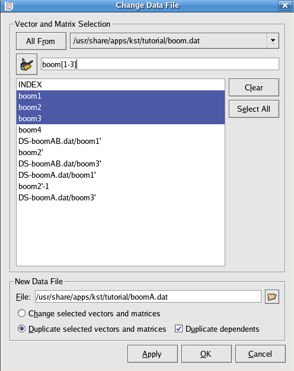

Data Tools
The Data Wizard provides a graphical quick and easy way of importing data into Kst- automatically creating vectors, curves, power spectra, and plots. To launch the wizard, select -> or click on the icon in the toolbar. The Data Source pane will appear as following and you will need to select a data source file.
After selecting the data source file, you may need to configure the file by clicking on the button. For information on how to use the Configure Data Source dialog, see the ASCII datasource section.
After configuring the data source file, click on the button to close the Configure Data Source dialog, and click on the button in the Data Source pane. The Select Data pane will appear as shown below.
Here you can select the fields you wish to import into Kst. The right and left arrow buttons allow you to move data vectors back and forth between the Available data and the Selected data lists. The up and down arrow buttons allow you to move the positions of the selected vectors up and down in the Selected data list. You may filter the list of fields by entering a string to match (wildcards such as * are supported) into the text box above the list. Click the button to advance to the Data Presentation pane.
The Data Range section is used to specify the range of data to read from the selected vectors in the input file. For information about these parameters, read the description of the Vector data object.
Power Spectrum and X axis settings can be specified within the Plot Types section. These settings are described below.
Select whether to plot the data (XY) only, Power spectrum only, or both. If the power spectrum is selected for plotting, additional settings in this section become available.
The vector to be used as the independent vector for the plots. You may select a field from your data file, or the INDEX vector. The INDEX vector is simply a vector containing elements from 0 to N-1, where N is the number of frames in the data file.
The FFT Options subsection in the Plot Types section is available only if a power spectrum is to be plotted. Detailed information on these options can be found in the Spectrum section.
Once you are satisfied with all the settings, click the button to advance to the final window.
From here, you can change general plot settings. Most of the settings are self-explanatory. A brief overview of each section is provided below.
Select whether to plot data points only, lines connecting the data points only, or both. By default, lines are continuous with weight 0, and data points are marked using crosses. Line and data point colors are chosen so that curves with identical colors are minimized. Note that the curve style settings apply to both Power Spectra and XY plots.
Select the plots to place the new curves on. Cycle through distributes the curves on the plots by cycling through the plots.
For example, if you have 4 curves, and you choose to cycle through 2 plots. The result will be that curve 1 is placed in plot 1; curve 2 is in plot 2, and this is the first plot cycle. Curve 3 is back to plot 1; curve 4 goes to plot 2, and this is the second cycle. Note that the curve placement settings apply to both Power Spectra and XY plots.
Select the desired labels and legends to be placed on the plots.
Select the desired window(s) to place the new plots in. New windows can be created for the plots by selecting In new window.
Select these check-boxes if you would like the automatically created power spectra to have logarithmic X or Y axes.
Once you are satisfied with all the settings, click the button and the plots will be generated.
The menu provides quick access to many features related to data objects in Kst. Most of the menu functions duplicate functions found elsewhere, so only brief descriptions are provided below.
Reloads all data vectors from their source files.
Displays the Data Manager.
Displays the View Manager.
Displays the corresponding dialog for creating the data object. Refer to Data Types for descriptions of each dialog.
Displays a dialog from which the values of all the scalars in the current Kst session can be viewed. The values are displayed hierarchically, based on which higher level data objects the scalars are determined for. The dialog is updated dynamically if the values change.
Displays a dialog from which the values in all the current vectors can be viewed. Select a vector to view using the drop-down list. The dialog is updated dynamically if the values change.

Displays a dialog from which the values in all the current matrices can be viewed. Select a matrix to view using the drop-down list. The dialog is updated dynamically if the values change.
Displays a dialog which shows all the resulting values from fit plugins. Select a fit result to view using the drop-down list. The dialog is updated dynamically if the values change.
Data mode allows precise viewing of the data points used in a plotted data object. To toggle data mode, select ->, or click the Data Mode icon on the Toolbar. Now, when the cursor is moved over a plot, a coloured dot will indicate the closest data point to the cursor, as shown in the screenshot below. The status bar will display the coordinates of the data point (in terms of the x and y vectors used to plot the data object) in the status bar at the lower left corner of the Kst window. The status bar will also display the x, y, and z coordinates of any visible image. If images overlap, only the coordinates of the topmost image will be displayed. Note that all zooming functions are still available while in data mode.
If the status bar is not visible, select ->
One common mode of using Kst is to create a “session” of plots and analysis for a particular type of data. Then, the same plots and analyses can be performed easily on another set of data simply by changing the data source file, provided that the two data files are similar. For example, for ASCII data files, similar data files need to have same number of fields.
The Change Data File dialog can be accessed by choosing -> or clicking on the icon in the toolbar. The dialog which appears is shown below:

To use this dialog, select the vectors which you would like to change the data file of using the list in the middle of the dialog. The All From, Clear, Select All, and search field can help you to do this. The use of wildcards is supported in the search field.
Then, select a new data file. If the Change selected vectors and matrices radio button is selected, then when you press the or button, the plots of the selected data vectors will be replaced by the data vectors loaded from the same fields of the new data file that you specified.
If the Duplicate selected vectors and matrices radio button is selected, vectors coming from the new file will be ploted together with the existing vectors in exactly the same way.
If some of the selected vectors have dependents (curves, spectra, histograms, etc.) then the Duplicate dependents option allows you to duplicate these objects as well.
The dialog can be accessed through the menu or the icon in the toolbar. It allows you to modify how a set of vectors are read in from their associated files. The options are detailed in the Data Range option of the Data Vectors documentation.
As mentioned above, most data tools have corresponding icons in the toolbar. There are also some useful icons commonly seen in various dialogs.
This icon opens the New Vector dialog, the same as choosing Data->
This icon opens the Edit Vector dialog where you can edit the properties of the currently selected vector.
This icon opens the New Matrix dialog, the same as choosing ->
This icon opens the Edit Matrix dialog where you can edit the properties of the currently selected matrix.
This icon is commonly seen in the search field of many dialogs used to list data objects (vectors, curves, etc). For example, it appears in the Data Manager, View Scalar Values, and Change Data File, etc.
It is used to quickly clear the textbox of the Search field and restore the original list of data objects.
This icon opens the New Scalar dialog as shown below:
Here, you can define your own scalar by typing its name and associated value.
This icon is used to change values of user-defined scalars. Essentially, it opens the same dialog as shown above.


Would you like to make a comment or contribute an update to this page?
Send feedback to the KDE Docs Team